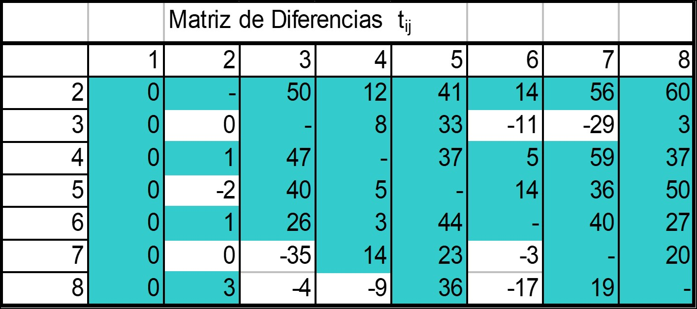
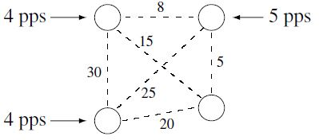
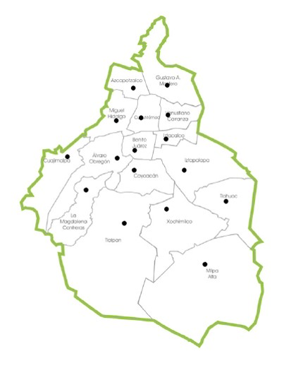
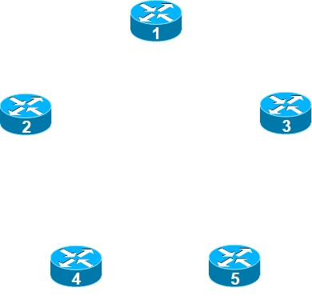
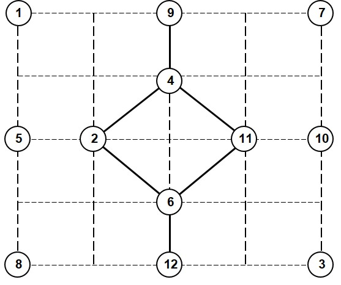
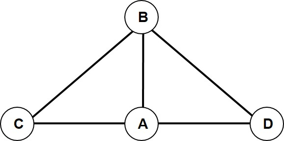

Capítulo 4 Diseño lógico de la red
El diseño lógico de la red consiste no solamente en definir la topología de interconexión entre los distintos componentes que la conforman. En esta etapa también se determinan las tecnologías para llevar a cabo dicha interconexión. También se establecen las políticas de asignación de direcciones y de nombres, las de seguridad y las de administración de la red. Todos estos elementos serán críticos para que la red cumpla de manera eficiente con los objetivos de diseño establecidos.
El diseño de la red se asemeja más a un arte que a una ciencia: No hay absolutos, no hay fórmulas exactas que puedan utilizarse ciegamente en todos los casos. Sin embargo, hay un conjunto de mejores prácticas* a partir de las cuales se podrán tomar decisiones más informadas durante el proceso de diseño.*
4.1 Diseño de la topología
En la metodología descendente, el primer paso del diseño lógico es el diseño de la topología de la red. La topología es un mapa en el que se identifican segmentos, puntos de interconexión y comunidades de usuarios. Con esta información se puede tener una primera apreciación de las capacidades de los dispositivos y enlaces pero no se pueden elegir aún los dispositivos específicos con los que se construira la red.
En redes de comunicaciones, básicamente es posible identificar tres tipos de topología:
- Plana.-
-
Topología convencional en la que todos los dispositivos de conmutación tienen la misma funcionalidad.
- Amorfa.-
-
También conocida como de spaghetti, es una anarquía; la interconexión entre nodos se hace sin orden ni planeación. Es el efecto directo de un crecimiento reactivo y no planeado. Tarde o temprano ocasiona serios problemas para la gestión de la red, el dimensionamiento de enlaces, la implementación de políticas de enrutamiento, etc.
- Jerárquica.-
-
Agrupamiento ordenado de nodos y enlaces. El tráfico con destinos comunes se va agrupando y fluye por enlaces principales para llegar lo más cerca de su destino y ahí proceder a la desagregación.
4.1.1 Topología plana
Algunos ejemplos de topologías planas bien conocidas se muestran en la figura 4.1.
Figura 4.1: Ejemplos clásicos de topologías planas de redes
Las topologías planas son sencillas de diseñar e implementar. Tambíen son fáciles de administrar en redes pequeñas, por lo que se encuentran comúnmente en redes con pocos dispositivos. Una de las principales limitantes de estas topologías es su falta de escalabilidad. En la topología de anillo, está limitada por el número de saltos que habría que dar para llegar de un extremo a otro, lo que provoca una latencia variable entre dos nodos cualesquiera que deseen comunicarse, y muy grande para la comunicación entre los extremos.
En la estrella, también llamada hub and spoke, la escalabilidad queda limitada por el número de puertos en el nodo central. Además, hay un punto único de falla y un potencial cuello de botella de procesamiento. Por otro lado, al tener un punto central donde fluye la información, esta topología es muy útil para gestionar la red y controlar la seguridad.
Las topologías de malla parcial o total son sumamente costosas. En la malla total, en particular, es muy difícil agregar un nuevo nodo. Además, el desempeño estará en función del número de vecinos que tiene un nodo enrutador: se debe recordar que la actualización de las tablas de ruteo requiere de la atención de mensajes de difusión, lo cual consume recursos de CPU en la mayoría de los enrutadores. Entre más vecinos enrutadores haya, peor será el desempeño.
Por otra parte, es muy complicado establecer el enrutamiento en este tipo de configuración. También se dificulta el mantenimiento y actualización por la falta de modularidad. Como se ha mencionado, algunos de estos problemas también se detectan en las topologías de spaghetti.
4.1.2 Diseño jerárquico
El diseño jerárquico proporciona un enfoque estructurado que busca obtener una red más fácil de entender, administrar, planear y escalar. Consiste en dividir la red en capas, cada una responsable de realizar una función específica.
En los primeros diseños jerárquicos se definían dos capas: la red de acceso, encargada de ofrecer conectividad a los usuarios finales, y el núcleo, cuyo objetivo central es proporcionar interconexión eficiente entre los distintos sitios.
Conforme han evolucionado las redes, se ha propuesto incluir una tercera capa: la de distribución, encargada de ofrecer los servicios del núcleo a la capa de acceso definiendo las políticas necesarias. Por ejemplo, en esta capa se puede llevar a cabo la agregación de rutas, la traducción de direcciones y la implementación y monitoreo de las políticas de seguridad establecidas.
La figura 4.2 representa esquemáticamente las tres capas de un diseño jerárquico. En el modelo de la derecha se incluyen enlaces redundantes entre la capa de acceso y la de distribución. Estos enlaces mejoran el desempeño y aumentan la disponibilidad de la red, como se verá en la sección 4.6.
Figura 4.2: Diseño jerárquico de tres capas
Dependiendo de las características de la red, los nodos en cada capa pueden ser enrutadores, conmutadores, concentradores o puede haber una combinación de dispositivos, como se muestra en la figura 4.2. Por ejemplo, en una LAN, la capa de acceso podría estar formada por concentradores y conmutadores para conectar usuarios finales. En cambio, en una red WAN la capa de acceso podría consistir en los enrutadores de salida de las redes locales.
El diseño jerárquico en capas ha adquirido una creciente atención debido a las múltiples ventajas que ofrece, entre las que cabe destacar las siguientes:
Permite reducir costos al utilizar equipo especializado en cada nivel. Por ejemplo, los dispositivos en la capa de acceso pueden necesitar una gran densidad de puertos de bajo costo, mientras que los dispositivos en el núcleo tendrán pocos puertos de alta velocidad y su prioridad será una muy alta tasa de conmutación;
al elegir los dispositivos apropiados en cada capa, permite aislar los dominios de difusión, mejorando así el desempeño de los enrutadores y estaciones de trabajo;
permite una mejor planeación de capacidad, y en consecuencia, un mayor escalamiento;
permite una administración sencilla pues se cuenta con una red con una estructura lógica coherente. También simplifica la evolución gradual de la red;
simplifica el aislamiento de fallas, lo que facilita un diseño que contemple la continuidad del negocio;
simplifica la planeación de agregación de rutas, lo que se traduce en un menor uso de ancho de banda para anunciar rutas y un menor consumo de CPU en los enrutadores.
La mayoría de los protocolos de enrutamiento de convergencia rápida en uso actualmente, como OSPF (Open Shortest Path First), IS-IS (Intermediate System to Intermediate System), BGP (Border Gateway Protocol) y EIGRP (Enhanced Interior Gateway Protocol) fueron diseñados para emplearse en redes jerárquicas.
Al optar por un diseño jerárquico, hay ciertas recomendaciones que deben seguirse con el fin de explotar al máximo las ventajas de esta metodología, entre las que destacan:
Se debe limitar el número de capas (llamado diámetro) para mantener la latencia baja y predecible. Esto también permite estimar las trayectorias de enrutamiento y los flujos de tráfico, para planificar adecuadamente la capacidad de los enlaces.
El diseño de la red comienza con la capa de acceso y de ahí se mueve hacia adentro. Empezar en la capa de acceso permite una mejor planeación de la capacidad que se requerirá en las capas superiores. También se empieza a pensar en las posibles tecnologías y optimizaciones que se podrían aplicar a esos niveles tomando en consideración que en cada nivel se debe mantener el diseño lo más modular posible.
Se debe mantener un estricto control de la capa de acceso, que es la más vulnerable. A través de un reforzamiento de las políticas de la empresa, se debe evitar que los administradores locales establezcan enlaces directos entre oficinas regionales (llamados cadenas), lo cual en términos prácticos representa la creación de una cuarta capa. También se deben evitar "puertas traseras", es decir, enrutadores que conectan entre sí dos redes en una misma oficina regional. Esto introducirá una serie de problemas de ruteo muy difíciles de identificar y corregir. Además, la seguridad de la red está en juego pues las políticas de seguridad están implementadas en la capa de distribución.
A veces las cadenas son necesarias, por ejemplo para agregar una nueva ciudad que solo tiene conectividad con otra. Por su parte, se tiende a meter una puerta trasera para aumentar el desempeño o por redundancia. En ambos casos, se puede encontrar generalmente una configuración que no viole el diseño jerárquico.
4.2 Diseño de la capa de acceso
La función principal de esta capa es proporcionar acceso a la red de la empresa a grupos de usuarios locales. Una LAN generalmente está conformada por concentradores y conmutadores, pero puede incluir los enrutadores que están en el límite exterior de un campus. En el caso de redes WAN la capa de acceso determina la conectividad de los nodos y usuarios en una misma región geográfica, por ejemplo, una ciudad.
En grandes redes, esta capa debe dar acceso a cientos o miles de usuarios, por lo que resulta prioritario encontrar una solución a costo mínimo.
El objetivo central de diseño en la capa de acceso es maximizar el desempeño a un costo mínimo cumpliendo los requerimientos fijados.
Para reducir los costos, en la capa de acceso se busca típicamente agrupar el tráfico de varios usuarios (también llamados terminales) en nodos concentradores y establecer una topología de interconexión. Así, el problema de diseño en la capa de acceso puede dividirse en tres sub-problemas:
Seleccionar los mejores candidatos para concentrar en ellos el tráfico de los usuarios.
Seleccionar qué usuarios se conectan a qué concentradores.
Definir la topología de interconexión en cada caso.
Estos problemas pertenecen a una categoría que se conoce genéricamente como Facility loaction problem. Se ha demostrado que en el caso general estos problemas son NP-Completos11, por lo que se han propuesto diversas heurísticas para resolverlos. En las secciones siguientes se presentan algunas de ellas.
Aunque las heurísticas mostradas tienen muchos años de ser conocidas (por ejemplo, el método de Kruskal data de 1956), variantes de estas técnicas tienen muchas aplicaciones en las redes actuales. Por ejemplo, para establecer una primera aproximación a la ubicación de radiobases y puntos de acceso en redes inalámbricas; para ubicar multiplexores en anillos ópticos; para seleccionar puntos de presencia (PoP) de operadores; etc.
4.2.1 Problema de Localización-asignación
El diseño de la red de acceso inicia estableciendo cuántos concentradores se necesitan para una determinada población de usuarios (o terminales) y dónde conviene colocarlos.
Las localidades donde conviene concentrar el tráfico de los usuarios suelen ser un subconjunto de los sitios donde éstos se encuentran. La selección específica de localidades dependerá del número de puertos disponibles, de la capacidad de los enlaces y del tráfico esperado. Sin embargo, resulta apropiado partir de una primera selección de candidatos, por lo que se presenta en primer término un algoritmo sin restricciones, es decir, se asociará un costo a los enlaces (que puede ser distancia, número de saltos, retraso, etc.) pero no se tomarán en cuenta limitaciones en ancho de banda de los enlaces ni capacidades de los equipos.
Algoritmo de Dysart-Georganas
El algoritmo de Dysart-Georganas permite identificar los mejores candidatos para ser nodos concentradores utilizando como criterio el grado de vecindad, o número de nodos vecinos cercanos. Utiliza un parámetro \(K\) que representa el número de nodos vecinos que un concentrador puede interconectar. Sea \(N\) el número de nodos en la red. El algoritmo es el siguiente:
Se genera una lista de nodos con sus \(K\) vecinos más cercanos.
Se obtiene una tabla con la frecuencia \(j\) con que aparece cada nodo en la lista de vecinos.
Se calcula el número promedio de vecinos a partir de la tabla de frecuencias:
\[\bar v = \Big\lfloor\frac{\underset{j=1}{\overset{F}\Sigma}% S_j\times j}{N}\Big\rfloor+1\]
Los candidatos idóneos son aquellos nodos con un número de vecinos superior al promedio \(\bar v\).
Ejemplo 4.1 Considere la red de la figura 4.3. Las líneas entre los nodos representan enlaces potenciales con el costo indicado en cada una. Se busca elegir a los mejores candidatos para un valor de \(K=3\).
Figura 4.3: Topología de una red con diez nodos
Se construye una tabla de vecindades con los \(K=3\) vecinos más cercanos (es decir, con la métrica menor), para cada nodo. Por ejemplo, para el nodo 5 se eligen los tres vecinos con un costo de una unidad.
En la tabla de vecindades del ejemplo, la segunda columna muestra los vecinos más cercanos. La columna de frecuencia representa el número de ocurrencias de cada nodo (incluyéndose a sí mismo) en la lista de vecindades. Por ejemplo, el nodo 5 aparece como vecino cercano de 5 nodos (los nodos 1, 2, 3, 4 y 6) más él mismo, lo que da una frecuencia de 6.
|
|
De la tabla de vecindades se obtiene una tabla de frecuencias que será utilizada para calcular el promedio ponderado de vecindades.
La tabla de frecuencias contiene las frecuencias \(J\) observadas en la tabla de vecindades y el número de veces, \(S_j\), en que se observó ese valor de frecuencia. El promedio ponderado se calcula directamente a partir de la tabla:
\[\bar v = \Bigg\lfloor\frac{1\times 1+2\times 1+3\times 2+4\times % 1+5\times 3+6\times 2}{10}\Bigg\rfloor +1=5\]
Los candidatos potenciales son aquellos con un número de vecinos mayor o igual a 5, es decir, los nodos 2, 6, 7, 4 y 5.
Si se encuentra que algunos concentradores están demasiado cerca o si hay sobrecarga al agregar el análisis de tráfico, a partir de este diseño de base se pueden hacer reconfiguraciones.
4.2.2 Asignación de nodos a concentradores
Una vez identificada la localización de los concentradores potenciales, deberá decidirse cómo interconectar los nodos terminales con estos concentradores. Dado que en general se da prioridad a minimizar el costo debido a la potencialmente gran cantidad de usuarios (o nodos) que deben interconectarse, se busca que cada nodo se conecte a uno y solamente un concentrador, ignorando enlaces redundantes.
Básicamente, se evalúa la conveniencia de cada concentrador potencial calculando el costo o la reducción que se tiene eliminando cada uno de ellos. Para esto, se han propuesto varias heurísticas, entre las más populares están:
Greedy. Cada terminal se conecta a su concentrador más cercano. Si ya no tiene capacidad (en nuestro caso, si ha alcanzado la conectividad \(K\)), la terminal se conecta al mejor disponible.
Add o de construcción. Todos los nodos se conectan a un solo concentrador. Se van agregando concentradores que prometan ahorros en costo de conectividad y se conectan terminales a ellos hasta que no se justifique agregar más.
Drop o de eliminación. Se inicia con cada nodo conectado al concentrador que minimiza el costo de la conexión. Se eliminan concentradores hasta que ninguno pueda eliminarse.
4.2.3 Topología de nodos a concentrador
Ya se ha decidido qué concentradores se retienen y qué nodos deben conectarse a cada uno. Solo falta decidir cómo deben conectarse los nodos terminales al concentrador. La topología más sencilla es la estrella, pero puede no ser la configuración más eficiente, por lo que deben investigarse alternativas en las que algunos enlaces pueden compartirse transportando el tráfico de varios nodos.
Este tipo de problemas para obtener las trayectorias mínimas entre un conjunto de nodos es bien conocido en redes de comunicaciones y en logística. Sus soluciones consisten en encontrar un árbol de expansión mínimo (minimum spanning tree, MST), es decir, aquél en el que la suma de los brazos es mínima. A continuación se presentarán dos ejemplos de estos algoritmos. Ellos dan una solución mínima cuando se trabaja sin restricciones, es decir, sin considerar las capacidades de los enlaces. Al incluir esta restricción, los métodos pueden proporcionar resultados ligeramente distintos.
Con el fin de ejemplificar los dos algoritmos, se considerará una red que tiene ocho nodos, de los cuales el primero es es concentrador. Los “costos” de conexión entre los distintos nodos, son los que se muestran en la matriz de costos.
El costo aquí puede ser cualquier métrica: costo de instalación, longitud de cableado, etc. Las métricas de desempeño y de número de saltos son costos más relevantes en redes WAN.
| Matriz de costos \(c_{ij}\) | ||||||||
| 1 | 2 | 3 | 4 | 5 | 6 | 7 | 8 | |
| 1 | 0 | 2 | 52 | 13 | 45 | 15 | 58 | 59 |
| 2 | 2 | 0 | 52 | 14 | 43 | 16 | 58 | 62 |
| 3 | 52 | 52 | 0 | 60 | 85 | 41 | 23 | 55 |
| 4 | 13 | 14 | 60 | 0 | 50 | 18 | 72 | 50 |
| 5 | 45 | 43 | 85 | 50 | 0 | 59 | 81 | 95 |
| 6 | 15 | 16 | 41 | 18 | 59 | 0 | 55 | 42 |
| 7 | 58 | 58 | 23 | 72 | 81 | 55 | 0 | 78 |
| 8 | 59 | 62 | 55 | 50 | 95 | 42 | 78 | 0 |
Algoritmo de Esau-Williams
El método de Esau-Willimas da muy buenos resultados aún para redes de gran tamaño y ha sido la base de muchas estrategias contemporáneas. Consiste en los pasos:
Se inicia con todos los nodos conectados en estrella con el concentrador.
Se calcula una matriz de diferencias \(d_{ij} = c_{ij} - c_{i1}\), es decir, la diferencia resultante de conectar el nodo \(i\) al nodo \(j\) en vez de conectarlo al concentrador (nodo 1).
Las entradas con valores negativos indican conexiones alternativas más económicas para esos concentradores.
Se empieza por seleccionar los valores más negativos y se continúa hasta agotarlos.
Ejemplo 4.2 A partir de la matriz de costos se calcula la matriz de diferencias de la siguiente manera: \[\begin{aligned} d_{2-3}=c_{2-3}-c_{2-1}=52-2=50;&\quad d_{2-4}=c_{2-4}-c_{2-1}=14-2=12; \ldots\\ d_{3-2}=c_{3-2}-c_{3-1}=52-52=0;&\quad d_{3-4}=c_{3-4}-c_{3-1}=60-52=8;\ldots \end{aligned}\]
La matriz de diferencias resultante para la configuración de referencia en esta sección es:

El proceso inicia conectando todos los nodos al concentrador, como se muestra en el Paso 0 de la figura 4.4.
Figura 4.4: Algoritmo Esau-Williams. Pasos 0 a 2 del ejemplo
En la matriz de diferencias se busca el enlace con el valor más negativo, es decir, aquél que representa el mayor ahorro. Se trata del enlace \(7\leftrightarrow 3\) con un “ahorro” de 35. Conectar el nodo 7 al 3 en vez de conectarlo directamente al concentrador genera un ahorro de 35 unidades, por lo que se modifica la topología como aparece en el Paso 1 de la figura 4.4.
Se consulta nuevamente la matriz de diferencias. El siguiente número más negativo es el que corresponde al enlace \(3\leftrightarrow 7\) con un valor de 29. Este enlace no se toma en cuenta pues ya están conectados los nodos 7 y 3.
Al buscar el siguiente enlace, se selecciona el \(6\leftrightarrow 8\) con un valor de 17, modificando la topología como aparece en el Paso 2 de la figura 4.4.
En el paso 3, la matriz de diferencias indica conectar el nodos 3 al 6 y finalmente, el 5 al 2, dejando como resultado la topología que aparece a la derecha de la figura 4.5.
Figura 4.5: Algoritmo Esau-Williams. Pasos 3 y 4 del ejemplo
El costo de la topología de estrella era de 244 unidades; el costo de la topología final es de 179 unidades.
Algoritmo de Kruskal
El método de Kruskal es bastante sencillo pero se ha observado que para grandes redes con restricciones, las soluciones a las que se llega suelen estar alejadas de la topología óptima. Este método comienza con todos los nodos desconectados y consiste en:
Se ordenan los enlaces de la matriz según su costo.
Se seleccionan los enlaces de menor a mayor costo y se van trazando en el diagrama. Si la utilización de un enlace genera un lazo, éste se rechaza.
Se continua seleccionando enlaces hasta que todos los nodos estén conectados.
Ejemplo 4.3 A partir de la matriz de costos que se presentó en el ejemplo 4.2, la relación de enlaces ordenados por costo es la siguiente:
| Enlace | Costo | Enlace | Costo | |
|---|---|---|---|---|
| \(1 \leftrightarrow 2\) | 2 | \(6 \leftrightarrow 4\) | 18 | |
| \(1 \leftrightarrow 4\) | 13 | \(3 \leftrightarrow 7\) | 23 | |
| \(2 \leftrightarrow 4\) | 14 | \(3 \leftrightarrow 6\) | 41 | |
| \(1 \leftrightarrow 6\) | 15 | \(6 \leftrightarrow 8\) | 42 | |
| \(2 \leftrightarrow 6\) | 16 | \(2 \leftrightarrow 5\) | 43 |
Se selecciona el primer enlace y se conecta el nodo 2 al concentrador. De igual forma, en el siguiente paso se conecta el nodo 4 al concentrador. El siguiente enlace a considerar sería entre los nodos 2 y 4 pero esto generaría un lazo, por lo que se ignora; se toma el enlace conectando el nodo 6 al concentrador como se muestra en la figura 4.6.
Figura 4.6: Algoritmo de Kruskal. Pasos 1 a 3 del ejemplo
Los enlaces \(2\leftrightarrow 6\), y \(6\leftrightarrow 4\) también formarían un lazo y no son tomados en cuenta. Siguiendo con la tabla, se conectan los enlaces \(3\leftrightarrow 7\), \(3\leftrightarrow 6\), \(6\leftrightarrow 8\) y \(5\leftrightarrow 2\). Con esto se han conectado todos los nodos, como se muestra en la figura (fig:k47), que –en esta ocasión– coincide con la topología de la figura 4.5.
Figura 4.7: Algoritmo de Kruskal. Pasos 4, 5 y 7 del ejemplo
Consideraciones de tráfico
En los ejemplos de los algoritmos anteriores no se tomaron en cuenta restricciones. En situaciones más reales hay que tomar en cuenta varias restricciones, como el hecho de que no siempre están disponibles las conexiones entre dos nodos cualesquiera. Una restricción más importante consiste en reconocer que no se pueden agregar nodos indefinidamente en un enlace multilínea sin tomar en cuenta la carga que cada nodo irá agregando a la red. Eventualmente la capacidad del enlace se verá rebasada.
Si ese fuera el caso, al aplicar las heurísticas de Esau-Williams o de Kruskal, la conexión que violara la restricción de capacidad tendría que ser ignorada y se pasaría al siguiente punto.
Ejemplo 4.4 Retomando el ejemplo 4.2 del algoritmo Esau-Williams, se considerará que la capacidad máxima de cualquier enlace es de 19 unidades (paquetes, tramas, kBytes, …) y que cada nodo contribuye con la carga que se indica en la tabla. Al querer agregar el tráfico de los nodos 7 y 3 al nodo 6 (paso 3 en la figura 4.4, la capacidad del enlace \(6\leftrightarrow 1\) se rebasaría, por lo que la conexión \(3\leftrightarrow 6\) no se realiza. La topología resultante se muestra en la figura 4.8.
| Nodo | 2 | 3 | 4 | 5 | 6 | 7 | 8 |
|---|---|---|---|---|---|---|---|
| Tráfico | 14 | 12 | 13 | 6 | 7 | 6 | 6 |
Figura 4.8: Algoritmo con restricciones de tráfico. Configuración resultante
4.3 Capa de distribución
La capa de acceso y el núcleo de la red tienen objetivos muy distintos. La primera da conectividad a los equipos terminales de los usuarios al menor costo posible. Por su parte, el núcleo de la red tiene por objeto encaminar los paquetes con la mayor eficiencia posible.
La capa de distribución funciona como un punto de demarcación entre estas dos. Su principal tarea es ofrecer los servicios de conectividad del núcleo a la red de acceso, con base en las políticas de la organización.
Los dispositivos en esta capa son los mejores candidatos para aplicar las políticas de la organización, pues en ella se interconectan las redes locales, concentrando el tráfico de los usuarios, y se libera a los dispositivos en el núcleo de realizar funciones ajenas a la conmutación eficiente de paquetes.
Los requerimientos de disponibilidad en la capa de distribución empiezan a cobrar importancia, pues el fallo de un equipo en esta capa puede aislar una sección muy grande de la red. Frecuentemente se usan equipos redundantes y los nodos de acceso se conectan a ambos como se muestra en la figura 4.3.
Las funciones específicas que realiza la capa de distribución dependen, desde luego, del tamaño y complejidad de la red, así como de la estrategia de la organización. La lista que se muestra a continuación ejemplifica algunas de estas funciones, muchas de las cuales serán descritas con mayor detalle en capítulos subsecuentes.
- Enrutamiento entre VLANs
-
. Si en la empresa se utilizan redes locales virtuales, la capa de distribución es un punto natural de interconexión, y de enrutamiento entre ellas.
- Servidores de configuración
-
. En redes de tamaño pequeño y mediano, en las que en la capa de acceso hay unas cuantas redes locales, servidores de configuración como DHCP, WINS, LDAP pueden colocarse en esta capa.
- Adaptación de protocolos de enrutamiento
-
. Frecuentemente los enrutadores en la capa de distribución deben seguir dos esquemas distintos de protocolos de enrutamiento: uno hacia la red de acceso y otro hacia el núcleo. En redes pequeñas, en la red de acceso suele seguirse un enrutamiento estático y en el núcleo uno dinámico interno (por ejemplo, OSPF). En redes medianas y grandes, la red de acceso suele tener enrutamiento dinámico interno y hacia el núcleo puede utilizarse un protocolo de enrutamiento externo (por ejemplo, BGP).
- Control de desempeño
-
. En redes pequeñas, esta capa rompe los dominios de difusión de las redes locales, limitando el tráfico entre ellas.
A través de la configuración de las tablas y políticas de enrutamiento, se controla el flujo de tráfico desde y hacia el núcleo de la red. Además, si la política de direccionamiento lo permite, es en esta capa en la que se puede realizar la sumarización de rutas para disminuir el tamaño de las tablas de enrutamiento en los dispositivos del núcleo.
Por otra parte, los dispositivos en esta capa pueden implementar mecanismos diferenciados de asignación de ancho de banda por prioridades y conformado de tráfico (traffic shaping) para cumplir con los acuerdos de servicio y no rebasar las capacidades del núcleo.
- Seguridad y auditoría
-
. Los dispositvos en la capa de distribución pueden filtrar el tráfico entre las capas de acceso y el núcleo para aplicar las políticas de seguridad de la organización. También es en este nivel el que se puede realizar la traducción de direcciones entre las redes internas (en la capa de acceso) y el núcleo.
Así mismo, la capa de distribución es un punto ideal para monitorear, auditar y contabilizar el tráfico que fluye por la red.
4.4 Diseño de la red dorsal
La función principal de red dorsal es interconectar eficientemente los sitios (es decir, las distintas redes de acceso) de la organización.
A diferencia de la red de acceso, en esta capa todos los “nodos” (es decir, los sitios) pueden intercambiar tráfico entre sí, por lo que los dos criterios fundamentales de diseño para la red dorsal son la eficiencia y la tolerancia a fallos.
Por ello, todas las funciones lógicas relacionadas con las políticas de la organización han sido relegadas a la capa de distribución. Los dispositivos a seleccionar para el núcleo de la red deben tener una muy alta disponibilidad y capacidad de conmutación de paquetes.
Un fallo en la red dorsal afecta a una gran parte de los usuarios, por lo que se busca diseñar una topología redundante (ver figura 4.9) capaz de soportar un cierto número de fallos y de adaptarse a los cambios rápidamente.
Figura 4.9: Diseño de la red dorsal
Se debe tratar limitar el tamaño y mantener la consistencia del núcleo de la red. Esto permitirá predecir el desempeño, detectar rápidamente fallos y en general, simplificar la administración.
En un campus, el núcleo de la red interconecta las redes LAN que ya han sido agregadas en la capa de distribución. En una red WAN, esta capa típicamente utiliza los servicios de un proveedor de transporte para interconectar los sitios entre sí.
Entre los servicios propuestos por los operadores en la actualidad para diseñar la red dorsal se encuentran:
X.25
Frame Relay
ATM
MPLS
Enlaces dedicados
Redes virtuales privadas en Internet (VPN)
La selección del servicio particular dependerá de su disponibilidad en todas las zonas que deban interconectarse así como de los requerimientos de diseño (desempeño, seguridad, costo, etc.). En la actualidad en México, como en muchas partes del mundo, prácticamente han desaparecido los servicios de X.25 y ATM y han sido sustituidos por Frame Relay (se estima que en 2003, el 80% de los enlaces WAN eran Frame Relay) y más recientemente, por MPLS y por VPNs, que se estudiarán con mayor detalle en capítulos posteriores. Salvo casos muy particulares, los enlaces privados también han perdido popularidad debido a su alto costo.
Para redes pequeñas, las topologías de malla, de estrella y combinaciones de éstas se han utilizado con regularidad. Sin embargo, ya se ha mencionado que estas topologías no podrían satisfacer algunos requerimientos críticos para redes grandes.
4.4.1 Diseño de la topología
Típicamente, diseñar la topología del núcleo implica encontrar un punto de equilibrio entre los requerimientos de costo, disponibilidad y desempeño de la red. Nuevamente, se ha encontrado que este es un problema de gran complejidad para el que se han propuesto algunas heurísticas iterativas de diseño. Un ejemplo clásico sería el siguiente:
Se calcula una matriz de tráfico entre los distintos sitios;
se propone una topología inicial (con algún algoritmo);
a partir de la matriz de tráfico, se asigna tráfico a los enlaces;
se determina la capacidad de los enlaces y se les asigna un costo;
se introduce una perturbación que altere la topología y se regresa al punto 3.
Cuando se han evaluado todas las posibilidades (o tras un determinado número de iteraciones, se retiene la topología con el costo menor.
Topológicamente, el diseño de la red dorsal debe cumplir con los requerimientos de disponibilidad. Esto implica que la topología debe tener \(k\) trayectorias disjuntas entre dos nodos cualesquiera si se desea que la red tolere \(k-1\) fallos y siga conectada 12.
Heurística de Steiglitz-Weiner-Kleitman
El problema de encontrar una red k-conectada de costo mínimo es conocido como el problema de diseño de redes sobrevientes o como el problema generalizado de los árboles de Steiner. La heurística de Steiglitz, Weiner y Kleitman permite encontrar una solución local para este problema.
La heurística está basada en el teorema de Whitney:
Una condición necesaria para que una red sea k-conectada, es que el grado de sus nodos (el número de interfaces en nuestro caso), sea mayor o igual a \(k\).
Funciona de la siguiente manera:
Se enumeran los nodos de manera aleatoria. Asignar identificadores aleatorios permitirá crear fácilmente nuevas topologías al tratar de hallar soluciones con costo menor.
Se asigna a todos los nodos un déficit igual al grado \(k\) deseado. Este déficit es el número de interfaces que no han sido asignadas a enlaces hacia otros nodos.
Se selecciona el nodo con el déficit más alto. Si hay varios candidatos, se selecciona el que tiene el menor identificador.
Se enlaza este nodo con el nodo con el mayor déficit entre los no adyacentes. Si hay varios candidatos, se selecciona el más cercano (menor costo). Si hay varios candidatos, se selecciona el que tiene el identificador menor. Al hacer el enlace, se decrementa el déficit en cada uno de estos nodos.
Se continúa desde el punto 3 hasta que todos los nodos tengan un déficit menor o igual a cero. Algunos nodos pueden tener un déficit negativo, lo que se ajustará posteriormente.
Ejemplo 4.5 En la figura 4.10 se presenta paso a paso la heurística de Stieglitz-Weiner-Kleitman para una red de 5 nodos con una tolerancia a 2 fallos (3-conectada).
Los números al interior de los nodos representan su déficit. Los números en el exterior representan su identificador aleatorio. En este caso, se ha supuesto que el costo de los enlaces es el mismo para cualquier par de nodos.
Figura 4.10: Algoritmo Stieglitz-Weiner-Kleitman
Asignación de capacidad
Si bien la asignación de capacidad de los enlaces es una actividad relacionada con el diseño físico de la red, en la red dorsal éste es un proceso complejo e iterativo que influye en la topología final, por lo que en esta sección se introducen los conceptos básicos de asignación de capacidad.
El punto de partida para dimensionar los enlaces de la red dorsal consiste en estimar la cantidad de tráfico que cada nodo inyectará hacia el núcleo. Para ello, es necesario identificar qué porcentaje del tráfico generado en las redes de acceso de cada nodo es local y qué porcentaje viaja hacia otros nodos (hacia otras redes de acceso). Esta información permite crear una matriz de tráfico con una aproximación del volumen de tráfico intercambiado entre nodos.
Una vez conocidos los volumenes de tráfico, es necesario identificar las trayectorias que recorrerán los flujos en la topología obtenida. En general, estas trayectorias estarán determinadas por las políticas y los protocolos de enrutamiento, y por la dinámica de la red. Si el número de conexiones es relativamente alto, y los enlaces tienen una métrica de costo similar, es posible suponer que las rutas seleccionadas serán las de menor costo.
Sin embargo, por razones que serán explicadas en capítulos posteriores, en redes de mediana complejidad la selección de rutas se establece con anterioridad mediante un proceso de Ingeniería de Tráfico en el que se configura una red superpuesta sobre la que se tiene un mejor control del tráfico en el núcleo de la red.
Finalmente, debe tomarse en cuenta que, si el criterio central de diseño es la tolerancia a fallas, entonces deberá asignarse un factor de sobrecarga que permita soportar el tráfico excedente en caso de que un enlace (una trayectoria) falle y su carga sea repartida entre los demás. Para soportar una falla, el factor de sobrecarga es: \[L_f = U -\frac{U}{N},\] donde \(N\) es el número de enlaces y \(U\) es la utilización máxima deseable con la que se dimensionan los enlaces.
Ejemplo 4.6 Para una red de grado 4, en la que se desea dejar libre un 20% de la capacidad de los enlaces en el caso de una falla, el dimensionamiento de los flujos no debe rebasar el 60% de utilización: \[L_f = 80\%-\frac{80\%}{4} = 60\%\]
En algunas ocasiones se tiene una idea general de los volúmenes de información generados en las redes de acceso pero se desconocen los patrones de tráfico detallados. En estos casos, no queda más remedio que recurrir a generalizaciones y suponer que los volúmenes de tráfico se concentrarán en los repositorios de información, o que se distribuirán uniformemente entre las redes de acceso.
Para apoyar el diseño de la red en estas circunstancias, se puede utilizar la siguiente fórmula de equilibrio de tráfico. El tráfico que entra a un nodo del núcleo debe ser igual a la cantidad de tráfico que sale del mismo: \[\Sigma_{i=1}^{N_a} v_a^i\times U_a^i = \Sigma_{j=1}^{k_b} v_b^j\times U_b^j,\] donde \(N_a\) es el número de redes de acceso que llegan a un nodo, \(v_a^i\) es la capacidad del enlace de la i-ésima red con una utilización media de \(U_a^i\), \(k_b\) es el grado del nodo en el núcleo y \(v_b^j\) la capacidad del j-ésimo enlace con una utilización media de \(U_b^j\).
Ejemplo 4.7 Considere una red nacional que tiene 1,000 sitios (o redes de acceso). Los usuarios generan en promedio \(950\,GB\) de datos por día hacia los demás sitios. No hay elementos para determinar cómo se distribuye este volumen de tráfico entre las distintas redes de acceso. Lo que sí se ha estimado, es que el 20% de este volumen se genera durante la hora de mayor actividad (la hora pico).
Todos los sitios se conectan a nodos en el núcleo por medio de enlaces \(E1\). Por políticas de la empresa, los enlaces en el núcleo también son \(E1\) y como criterio de diseño, estos enlaces no deben rebasar el 50% de utilización en condiciones normales de operación (es decir, sin tomar en cuenta fallos en la red). Se busca una red dorsal de grado 4. ¿Cuántos nodos en el núcleo deben considerarse?
En primer término, hay que determinar cuál es la utilización de los enlaces de acceso:
\[U_a = \frac{0.2(950\,GB/dia)}{1,000}\times \frac{8\,b}{3,600\,s}\times\frac{1}{2.048\,Mb/s} = 20.6\%\]
Ahora se puede estimar el número de enlaces por nodo: \[\begin{aligned} N_a\times v_a\times U_a &=k_b\times v_b\times U_b\\ N_a &= \frac{4\times 2.048\,MB/s\times 0.5}{2.048\,Mb/s\times 0.206}\\ &= 9.7 \Rightarrow 9 \end{aligned}\]
Por consiguiente, se necesitarán \(1000/9\approx 112\) nodos.
Perturbación de la topología
La topología obtenida puede no ser la mejor aún si cumple con los criterios de costo y desempeño. Para generar otras topologías, se repite el proceso introduciendo perturbaciones controladas generando nuevos identificadores para los nodos.
Más importante aún, la topología inicial fue diseñada respondiendo a criterios de conectividad sin tomar en cuenta el tráfico en la red. Si se tiene un conocimiento general de los flujos, la topología resultante puede modificarse atendiendo a criterios como los siguientes:
Nodos que intercambien altos volúmenes de información deben tener enlaces conectados directamente.
Enlaces con muy poca utilización pueden ser eliminados y su tráfico asignado a enlaces cercanos.
Enlaces con tecnologías muy costosas también pueden ser eliminados.
4.5 Diseño basado en bloques modulares
En las secciones anteriores se han presentado los conceptos y los beneficios de contar con un diseño jerárquico de tres capas y se han mostrado algunos algoritmos para satisfacer los requerimientos de diseño en las capas de acceso y dorsal.
Otra característica que un buen diseño de redes debe cumplir es su modularidad. Sobre todo en redes medianas y grandes, un diseño modular simplifica las etapas de desarrollo y despliegue, facilita el mantenimiento de la red, reduce la probabilidad de dejar pasar errores no detectados, ofrece un buen rendimiento, y asegura la escalabilidad de la solución.
El diseño modular consiste en contar con bloques básicos de módulos (o componentes) típicos en la red de una organización, por ejemplo, bloques de granjas de servidores, de redes SAN, de redes locales, de acceso al núcleo, etc. Sobre esos bloques básicos, se harán pequeñas modificaciones para satisfacer los requerimientos específicos de diseño, y se interconectarán para integrar la red.
Dada su gran popularidad, en los siguientes párrafos se presentará el enfoque de diseño modular para una red de campus de tamaño medio.
Bloque básico de acceso
Excepto en redes locales inalámbricas y en algunos nichos muy específicos, el uso de concentradores en las redes locales ha disminuido dramáticamente. Las ventajas de seguridad y de mayor desempeño, aunado a una gran reducción en el costo por puerto de los conmutadores, han hecho que estos dispositivos sean los más utilizados en la actualidad, como se muestra en la figura 4.11.
Figura 4.11: Diseño modular. Bloque básico de acceso
Bloque básico de distribución
En la figura 4.12 se muestra un bloque genérico de la capa de distribución. Dependiendo de las funcionalidades deseadas, y del tamaño de la red, en el bloque de distribución pueden encontrarse conmutadores, enrutadores o ambos. En la figura mostrada, se observan conmutadores a los que se conectan los conmutadores de la red de acceso. Las funcionalidades de la capa de distribución se ejecutan en los enrutadores.
Figura 4.12: Diseño modular. Bloque básico de distribución
Bloque básico de red dorsal
En un campus, como en una red local grande, el núcleo de la red estará conformado por conmutadores de alto desempeño, como se muestra en la figura 4.13. En este caso particular, ni siquiera las funciones de enrutamiento se efectúan en el núcleo. Estas fueron delegadas a la capa de distribución.
Figura 4.13: Diseño modular. Bloque básico de la red dorsal
Con el diseño modular, construir una solución para una red consiste en interconectar los bloques básicos. Por ejemplo, en la figura 4.14 se muestra del lado izquierdo una solución para una red de campus genérica. Para satisfacer los requerimientos de disponibilidad, esta misma red puede robustecerse como se muestra en el diagrama de la derecha. La siguiente sección presenta algunos conceptos de topologías redundantes.
Figura 4.14: Red genérica modular sin y con enlaces redundantes
4.6 Topologías con redundancia
Con el fin de satisfacer los requerimientos de disponibilidad, el diseño de la red debe contar un cierto número de componentes redundantes que permitan asegurar, al menos, la continuidad de las operaciones de misión crítica de la organización.
En las secciones anteriores ya se han introducido enlaces redundantes para tolerar fallos sobre todo en el núcleo de la red. Sin embargo, para que la infraestructura continúe operando, el diseño de la red también debe incluir redundancia en servidores, en enrutadores y nodos de conmutación, en los accesos a internet, y hasta en los sistemas de alimentación de energía eléctrica.
La redundancia en equipos y enlaces incide directamente en el costo de la infraestructura; además, genera una red mucho más compleja de administrar, sobre todo en la configuración de políticas de enrutamiento y en la gestión y asignación de direcciones.
El nivel de redundancia deseado debe elegirse con cuidado poniendo énfasis en el soporte a operaciones de misión crítica.
Por otra parte, una duplicación cuidadosa de componentes en la infraestructura de red en general permite realizar un balanceo de cargas aumentando así el desempeño total de la red.
Si los dispositivos redundantes no forman parte de la operación cotidiana de la red, resulta primordial garantizar que:
está definido y funciona apropiadamente el mecanismo para conmutar a los equipos de respaldo;
el tiempo de conmutación (llamado también tiempo de convergencia) a los equipos de respaldo está dentro de los parámetros aceptables para evitar caídas de las aplicaciones y servicios;
la capacidad de operación en el respaldo es suficiente para soportar los servicios principales. En este caso, se debe contar con mecanismos que filtren el tráfico para dar prioridad a los flujos de misión crítica;
los equipos y enlaces de respaldo son, efectivamente, independientes de la red en operación;
la red de respaldo es probada periódicamente para asegurar su funcionamiento. Se recomienda que por lo menos dos veces al año se realicen simulacros de fallos en los que se activen los dispositivos de respaldo.
Caso de estudio: Enlaces POTS de respaldo
Como muchas organizaciones, una empresa del sector financiero contaba con enlaces de microondas para interconectar sus sucursales con el centro de cómputo en la oficina matriz. Como respaldo, cada sucursal tenía una línea telefónica con un módem de 14.4 a 33 kb/s. Esta configuración funcionaba adecuadamente cuando los sistemas de la empresa tenían un modelo centralizado en el que las sucursales sólo ejecutaban aplicaciones de terminal virtual y a través de los enlaces se intercambiaban pantallas de texto únicamente.
En un momento determinado, el área informática, la cual estaba completamente desvinculada del área de telecomunicaciones, decidió actualizar sus sistemas y migrar a un modelo de varias capas. Ahora las aplicaciones en las sucursales ejecutaban clientes robustos con interfaces gráficas y contenidos más complejos.
Con el cambio, el volumen de tráfico entre el centro de datos y las sucursales aumentó sustancialmente. Este cambio sí fue notificado al área de telecomunicaciones y se aumentó la capacidad de los enlaces de microondas. En cambio, jamás se consideró la actualización en los enlaces de respaldo. El primer incidente posterior a la migración resultó caótico, pues el respaldo telefónico era totalmente insuficiente hasta para soportar las aplicaciones más esenciales.
Fue necesario activar un plan de emergencia adquiriendo enlaces de banda ancha o enlaces privados –que no estaban contemplados en el presupuesto original– y hacer profundas adecuaciones a la infraestructura de red para soportar la nueva topología.
Servidores y nodos
Existen algunos servicios, como el Servidor de Nombres de Dominio (DNS), diseñados específicamente para trabajar con servidores redundantes. Desgraciadamente ésta es la excepción, y en general, el balanceo de cargas no es una tarea trivial: en los servidores se requiere de reglas especiales y de un cierto nivel de sofisticación para llevarlo a cabo exitosamente.
Si la duplicación de servidores de aplicaciones, de archivos, de bases de datos, etc. resulta muy costosa, al menos se debe tratar de que estos servidores cuenten con discos RAID (Redundant Array of Inexpensive Disks) con el nivel de redundancia apropiado.
En los nodos de conmutación, uno de los componentes que más fallos presenta es la fuente de alimentación, muchas veces debido a problemas en el sistema de suministro. Por ello, es común que los conmutadores y enrutadores de alto desempeño cuenten con fuentes de alimentación redundantes, las cuales deben estar conectadas a una línea de alimentación distinta.
Enlaces
Aunque los enrutadores conozcan varias trayectorias hacia un mismo destino, normalmente no distribuyen el tráfico entre ellas a menos que todas las trayectorias cuenten con la misma métrica. De no ser así, los enrutadores deben configurarse específicamente para permitir el balanceo de cargas.
En las redes locales, el mecanismo de spanning tree en los conmutadores bloquea el balanceo de cargas al inhibir la existencia de varias trayectorias entre dos dispositivos.
Gateway por omisión
Cuando un dispositivo desea establecer una comunicación fuera de su red local, manda sus paquetes a un enrutador quien los redirige hacia la trayectoria que los conducirá al destino final. Este enrutador se conoce como el gateway por omisión y, típicamente, su dirección está configurada en las computadoras de la red local.
Este gateway es un punto vulnerable: si falla, todos los dispositivos en la red local pierden conexión con el exterior. Si se agrega un segundo enrutador como respaldo, en caso de detectar una falla todos los equipos en la red local deberán reconfigurarse con la dirección del enrutador de respaldo, lo cual es inaceptable en redes de mediano tamaño.
Se han propuesto varias soluciones a este problema. En primer lugar, los dispositivos podrían ejecutar un protocolo de enrutamiento interno (como RIP u OSPF) y recibir así los anuncios del gateway por omisión y del respaldo. En este caso, el protocolo en las estaciones debe ejecutarse en modo pasivo, es decir, atendiendo únicamente a los anuncios recibidos pero sin publicar sus tablas de ruteo para reducir el tráfico en la red. Desgraciadamente esta solución presenta varios problemas:
aumenta la complejidad para administrar los dispositivos;
los protocolos de ruteo consumen recursos;
el tiempo para reconfigurar un dispositivo depende de la frecuencia con la que se anuncien las tablas en la red, el cual depende del protocolo utilizado. Este tiempo puede ser lo bastante grande como para no pasar desapercibido;
se presta a ataques de seguridad pues un intruso o una máquina comprometida puede anunciarse como enrutador por omisión.
Router Discovery Protocol, RDP, es otra solución basada en la difusión periódica de mensajes ICMP especiales por parte de los enrutadores. Si un dispositivo detecta que un mensaje no ha sido recibido, supone que el gateway ha fallado y puede enviar inmediatamente otro mensaje ICMP solicitando que un (posiblemente nuevo) enrutador se anuncie. Esta solución reduce algunos de los problemas anteriores, pero sigue siendo vulnerable a los ataques de seguridad, por lo que ha sido muy poco implementada. De hecho, hoy se recomienda fuertemente ignorar los mensajes ICMP relacionados con este protocolo.
La solución más recomendada en la actualidad para ofrecer redundancia en el gateway por omisión es el protocolo VRRP (Virtual Router Redundancy Protocol), también conocido como enrutador fantasma, o la variante de Cisco: HSRP (Hot Standby Router Protocol).
Figura 4.15: Configuración de enrutador fantasma
Observe la figura 4.15. Se define un enrutador virtual con una dirección MAC y una dirección IP determinadas. El gateway por omisión responde a los mensajes enviados a estas direcciones virtuales y también envía al enrutador de respaldo mensajes periódicamente indicando que se encuentra activo. Si el enrutador de respaldo detecta que estos mensajes han dejado de enviarse, inmediatamente toma el papel del enrutador virtual, sin que los dispositivos en la red detecten el cambio.
El único problema con esta solución es que el enrutador de respaldo no puede ser utilizado para balancear la carga en la red local, aunque hay protocolos propietarios que lo permiten.
Salida a internet
Al definir trayectorias redundantes, hay que poner especial atención al enlace entre la empresa y el punto de presencia (PoP) del proveedor de acceso (ISP). Esta liga es normalmente la más débil de la red.
Dada la creciente importancia que han adquirido los accesos a Internet, una organización puede optar por alguna de las opciones que se muestran en la figura 4.16.
Figura 4.16: Configuraciones redundantes para acceso a Internet
Los principales elementos a considerar en estas configuraciones son la seguridad adicional de contar con más de un proveedor de acceso contra la complejidad que esto implica pues en general no es trivial definir, negociar y verificar un contrato de servicio para redes de tamaño medio.
En las primeras dos opciones se tiene la ventaja de trabajar con un solo proveedor, con lo que se podrían obtener, además, tarifas preferentes. Sin embargo, se establece una relación de dependencia con la infraestructura del único ISP.
La primera opción supone que el ISP cuenta con dos PoP relativamente cercanos entre sí, lo cual no siempre es el caso, sobre todo en ciudades pequeñas. Las opciones 2 y 4 se recomiendan para redes geográficamente muy dispersas, por ejemplo redes continentales o intercontinentales.
Con las opciones 3 y 4 se consigue, en principio, redundancia del proveedor de acceso, pero ésto debe tratar de verificarse con los ISPs pues con frecuencia no existe realmente independencia de circuitos. Los grandes ISPs suelen tener contratos entre ellos o con el proveedor de transporte dominante, para compartir circuitos, por lo que si éstos fallan, los dos ISPs dejarían de operar.
En todas las opciones, pero principalmente en las últimas dos, se deben definir e implmentar políticas especiales de enrutamiento para evitar que la red de la organización se vuelva una red de tránsito por el que los ISP intercambian tráfico entre ellos.
4.7 Problemas
Problema 4.1 ¿De qué manera la metodología de diseño jerárquico mejora el desempeño, la disponibilidad y la escalabilidad de la red?
Problema 4.2 ¿En dónde (red de acceso, distribución, núcleo) colocaría:
- Un firewall
- un switch que permita configurar VLANs
- un mecanismo de despacho de colas para ofrecer QoS?
Problema 4.3 ¿Qué tipo de interfaces (100BaseT en par trenzado, serial E1, fibra óptica alta velocidad, …) esperaría encontrar en los enrutadores de acceso, de distribución y de núcleo? ¿Cuántas?
Problema 4.4 Discuta brevemente qué tipo de topología (malla total, malla parcial, hub and spoke) utilizaría para interconectar:
- Un núcleo con 5 nodos;
- un núcleo con 20 nodos;
- una red de acceso para 5 nodos;
- una red de acceso para 20 nodos.
Problema 4.5 A partir de la siguiente matriz de costos, y considerando un valor de \(K=3\), obtenga los mejores candidatos para poner los concentradores de acuerdo al algoritmo de Dysart-Georganas.
| 2 | 3 | 4 | 5 | 6 | 7 | 8 | 9 | 10 | |
|---|---|---|---|---|---|---|---|---|---|
| 1 | 3 | 5 | 5 | 3 | 4 | 7 | 7.5 | 12 | 11.5 |
| 2 | 2 | 2 | 1 | 2.5 | 7 | 5 | 9 | 11 | |
| 3 | 2 | 2 | 2 | 3.5 | 7 | 5 | 9 | 11 | |
| 4 | 2 | 2 | 1 | 2.5 | 5 | 3 | 7 | 9 | |
| 5 | 1 | 2 | 1 | 1.5 | 4.5 | 4 | 8 | 10 | |
| 6 | 2.5 | 3.5 | 2.5 | 1.5 | 3 | 3.5 | 7.5 | 7.5 | |
| 7 | 7 | 7 | 5 | 4.5 | 3 | 1 | 5 | 45 | |
| 8 | 5 | 5 | 3 | 4 | 3.5 | 1 | 4 | 6 | |
| 9 | 9 | 9 | 7 | 8 | 7.5 | 5 | 4 | 2 | |
| 10 | 11 | 11 | 9 | 10 | 7.5 | 4.5 | 6 | 2 |
Problema 4.6 Considere la distribución de nodos en la figura y el tráfico introducido en cada nodo. Los valores entre nodos representan distancias en km. El tamaño de los paquetes es de \(6,000\, bits\). Considerando que los enlaces entre ciudades son E0,
Obtenga mediante el algoritmo de Kruskal la topología de árbol mínimo.
Obtenga la topología de menor costo considerando que el retraso por segundo es de \(\$1,000.00\). Suponga que el nodo inferior derecho es elconcentrador y que el costo de los enlaces es de \(\$40.00/km\).

Problema 4.7 Se desea diseñar una red para interconectar las Alcaldías de la Ciudad de Mëxico con las siguientes consideraciones:
Dado que las Alcaldías Milpa Alta (MA), Xochimilco (XO) y Tláhuac (TL) están muy alejadas de las demás, éstas se conectarán entre sí en un anillo doble.
La Alcaldía XO servirá de conexión entre MA y TL con las demás Alcaldías. Tendrá dos conexiones a la red de Alcaldías (es decir, su grado total será K=4).
Las Alcaldías Miguel Hidalgo (MH), Cuauhtémoc (CU), Benito Juárez (BJ), Álvaro Obregón (AO) y Coyoacán (CO) tendrán tres enlaces redundantes (K=3).
Las demás Alcaldías tendrán dos enlaces (K=2). Son Azcapotzalco (AZ), Cuajimalpa (CJ), Gustavo A. Madero (GM), Iztacalpo (IC), Iztapalapa (IP), Magdalena Contreras (MC), Tlalpan (TP) y Venustiano Carranza (VC).
La tabla de distancias (equivalente al costo) se muestra a continuación, junto con el identificador de cada Alcaldía y el grado inicial de los dispositivos de interconexión.
Muestre el diagrama de la red enumerando los enlaces conforme los va definiendo.

| Id | K | AO | AZ | BJ | CO | CJ | CU | GM | IZ | |
|---|---|---|---|---|---|---|---|---|---|---|
| 4 | AO | 3 | 10.56 | 4.40 | 5.50 | 11.55 | 7.32 | 13.06 | 10.17 | |
| 9 | AZ | 2 | 10.56 | 12.90 | 15.08 | 18.54 | 5.86 | 7.55 | 12.10 | |
| 8 | BJ | 3 | 4.40 | 12.90 | 2.37 | 14.94 | 7.88 | 12.80 | 6.85 | |
| 1 | CO | 3 | 5.50 | 15.08 | 2.37 | 14.43 | 10.20 | 15.11 | 8.41 | |
| 13 | CJ | 2 | 11.55 | 18.54 | 14.94 | 14.43 | 18.06 | 23.70 | 21.55 | |
| 2 | CU | 3 | 7.32 | 5.86 | 7.88 | 10.20 | 18.06 | 5.77 | 7.62 | |
| 10 | GM | 2 | 13.06 | 7.55 | 12.80 | 15.11 | 23.70 | 5.77 | 9.28 | |
| 11 | IZ | 2 | 10.17 | 12.10 | 6.85 | 8.41 | 21.55 | 7.62 | 9.28 | |
| 15 | IP | 2 | 11.30 | 16.96 | 7.03 | 7.44 | 21.79 | 11.11 | 13.38 | 4.10 |
| 3 | MC | 2 | 10.63 | 20.85 | 11.46 | 9.74 | 8.49 | 17.88 | 23.52 | 18.13 |
| 14 | MH | 3 | 1.81 | 8.85 | 4.91 | 6.64 | 12.79 | 5.61 | 11.36 | 9.50 |
| 16 | MP | 2 | 29.89 | 37.77 | 25.78 | 24.38 | 36.30 | 31.93 | 33.89 | 24.82 |
| 5 | TL | 2 | 23.96 | 30.38 | 19.59 | 18.79 | 32.45 | 24.53 | 25.73 | 17.04 |
| 6 | TP | 2 | 11.61 | 21.83 | 9.21 | 6.89 | 15.85 | 17.08 | 21.82 | 13.96 |
| 7 | VC | 2 | 7.60 | 10.39 | 7.12 | 9.22 | 19.55 | 4.75 | 6.52 | 3.08 |
| 12 | XO | 2 | 16.41 | 26.47 | 13.65 | 11.77 | 22.93 | 20.99 | 24.55 | 15.43 |
| Id | K | IP | MC | MH | MA | TL | TP | VC | X0 | |
|---|---|---|---|---|---|---|---|---|---|---|
| 4 | AO | 3 | 11.30 | 10.63 | 1.81 | 29.89 | 23.96 | 11.61 | 7.60 | 16.41 |
| 9 | AZ | 2 | 16.96 | 20.85 | 8.85 | 37.77 | 30.38 | 21.83 | 10.39 | 26.47 |
| 8 | BJ | 3 | 7.03 | 11.46 | 4.91 | 25.78 | 19.59 | 9.21 | 7.12 | 13.65 |
| 1 | CO | 3 | 7.44 | 9.74 | 6.64 | 24.38 | 18.79 | 6.89 | 9.22 | 11.77 |
| 13 | CJ | 2 | 21.79 | 8.49 | 12.79 | 36.30 | 32.45 | 15.85 | 19.55 | 22.93 |
| 2 | CU | 3 | 11.11 | 17.88 | 5.61 | 31.93 | 24.53 | 17.08 | 4.75 | 20.99 |
| 10 | GM | 2 | 13.38 | 23.52 | 11.36 | 33.89 | 25.73 | 21.82 | 6.52 | 24.55 |
| 11 | IZ | 2 | 4.10 | 18.13 | 9.50 | 24.82 | 17.04 | 13.96 | 3.08 | 15.43 |
| 15 | IP | 2 | 16.82 | 11.28 | 20.89 | 13.48 | 11.21 | 7.04 | 11.48 | |
| 3 | MC | 2 | 16.82 | 12.43 | 28.11 | 25.15 | 7.97 | 18.52 | 14.89 | |
| 14 | MH | 3 | 11.28 | 12.43 | 30.69 | 24.37 | 13.07 | 8.01 | 18.37 | |
| 16 | MP | 2 | 20.89 | 28.11 | 30.69 | 8.75 | 20.44 | 27.87 | 13.37 | |
| 5 | TL | 2 | 13.48 | 25.15 | 24.37 | 8.75 | 17.22 | 20.11 | 11.04 | |
| 6 | TP | 2 | 11.21 | 7.97 | 13.07 | 20.44 | 17.22 | 15.60 | 7.08 | |
| 7 | VC | 2 | 7.04 | 18.52 | 8.01 | 27.87 | 20.11 | 15.60 | 18.03 | |
| 12 | XO | 2 | 11.48 | 14.89 | 18.37 | 13.37 | 11.04 | 7.08 | 18.03 |
Problema 4.8 Mediante el método de Stieglitz-Weiner-Kleitman, interconecte los nodos siguientes con un nivel de redundancia = 2. Considere que no está permitida la conexión entre los nodos 1 y 5. Enumere los nodos conforme los vaya definiendo.

Problema 4.9 Diseñe la topología de costo mínimo con el método de Esau-Williams para una red cuya matriz de costos es la siguiente.
| 2 | 3 | 4 | 5 | 6 | 7 | |
|---|---|---|---|---|---|---|
| 1 | 1 | 4 | 3 | 2 | 7 | 9 |
| 2 | 2 | 6 | 9 | 3 | 5 | |
| 3 | 4 | 7 | 1 | 3 | ||
| 4 | 9 | 6 | 2 | |||
| 5 | 3 | 3 | ||||
| 6 | 7 | |||||
| 7 |
Estime el costo inicial y final.
Problema 4.10 Para la siguiente matriz de costos, utilice el método de Kruskal para obtener la topología óptima:
| 1 | 2 | 3 | 4 | 5 | |
|---|---|---|---|---|---|
| 1 | – | 6 | 3 | 3 | 5 |
| 2 | 6 | - | 3 | 5 | 1 |
| 3 | 3 | 3 | - | 4 | 5 |
| 4 | 3 | 5 | 4 | - | 3 |
| 5 | 5 | 1 | 5 | 3 | - |
Problema 4.11 Diseñe la topología del núcleo de red que se muestra en la figura mediante el método de Stieglitz-Weiner-Kleitman. Se desea que la red pueda subsistir a dos fallos por lo menos. Los enlaces que se muestran en la figura ya están establecidos y no pueden eliminarse. Las líneas punteadas en la figura sirven únicamente como referencia.

Problema 4.12 Explique brevemente para qué se utiliza la siguiente fórmula y qué signifca cada uno de sus términos. \[\bar v = \Big\lfloor\frac{\underset{j=1}{\overset{F}\Sigma} S_j\times j}{N}\Big\rfloor+1\]
Problema 4.13 La siguiente es una matriz de tráfico en paquetes por segundo en la hora pico para la red de la figura. Los enlaces deben dimensionarse con una capacidad tal que la utilización durante la hora pico sea de 80%.
| A | B | C | D | |
|---|---|---|---|---|
| A | \(11,000\) | \(900\) | \(750\) | \(10\,500\) |
| B | \(14,000\) | \(10,000\) | \(2,000\) | \(1\,300\) |
| C | \(9\,500\) | \(1\,800\) | \(4\,200\) | 0 |
| D | \(18\,700\) | \(550\) | 0 | \(3\,150\) |

Dimensione todos los enlaces.
Considere que \(A-C\) y \(A-D\) deben repartirse equitativamente la carga de \(A-B\) si este enlace falla. ¿Con qué capacidad deben dimensionarse estos enlaces?
Problema 4.14 Un concentrador hacia el núcleo recibe 25 enlaces como se muestra en la tabla. El núcleo está diseñado con una redundancia de K=3 y los enlaces (las troncales) no deben exceder 50% de utilización. ¿De qué capacidad deben ser estos enlaces?
| No. enlaces | Capacidad | Utilización |
|---|---|---|
| 5 | E1 | 37% |
| 10 | 1Mb/s | 57% |
| 10 | E0 | 75% |
Problema 4.15 De acuerdo al método de diseño con bloques funcionales, dibuje un bloque básico de red de acceso para una LAN.
Problema 4.16 Mencione algunas de las consideraciones principales a tomar en cuenta cuando se decide contratar accesos a internet a través de dos proveedores de servicio distintos.
Para un problema NP-Completo no se tienen algoritmos que proporcionen soluciones en tiempo polinómico, es decir, el tiempo esperado para resolverlo es el que tardaría una búsqueda exhaustiva de todas las posibilidades.↩︎
Una red está conectada si existe una trayectoria entre cualquier par de nodos. Se dice que la red es de grado k o está k-conectada si existen k trayectorias disjuntas entre cualquier par de nodos, donde dos trayectorias son disjuntas si no tienen ningún enlace o nodo en común.↩︎